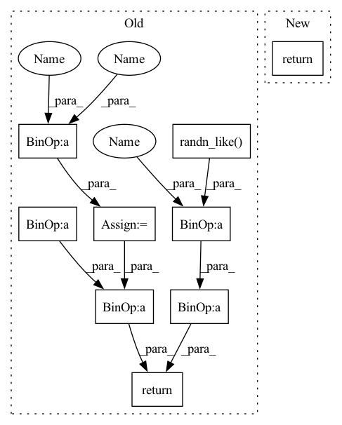

Pattern ID :4636

Before Change
z = self.encoder(x)
mean, scale = z.chunk(2, 1)
std = nn.functional.softplus(scale) + 1e-4
var = std * std
logvar = torch.log(var)
z = torch.randn_like(mean) * std + mean
kl = (mean * mean + var - logvar - 1).sum(1).mean()
return z, kl
@gin.register
After Change
def forward(self, x: torch.Tensor):
z = self.encoder(x)
return z
@gin.register
In pattern: SUPERPATTERN
Frequency: 3
Non-data size: 9
Instances
Fragment ID: 16672894
Project Name: caillonantoine/rave
Commit Name: 4ae97a330ef49e22db7a71751da91973ff59ff78
Time: 2022-05-31
Author: caillon@ircam.fr
File Name: rave/blocks.py
M Class Name: VariationalEncoder
N Class Name: VariationalEncoder
M Method Name: forward(2)
N Method Name: forward(2)
M Parent Class: nn.Module
N Parent Class: nn.Module
M File Name: rave/blocks.py
N File Name: rave/blocks.py
M Start Line: 319
M End Line: 329
N Start Line: 339
N End Line: 340
'>
Before Change
def forward(self, x: torch.Tensor):
z = self.encoder(x)
mean, scale = z.chunk(2, 1)
std = nn.functional.softplus(scale) + 1e-4
var = std * std
logvar = torch.log(var)
z = torch.randn_like(mean) * std + mean
kl = (mean * mean + var - logvar - 1).sum(1).mean()
return z, kl
@gin.register
After Change
def forward(self, x: torch.Tensor):
z = self.encoder(x)
return z
@gin.register
'>
Fragment ID: 16672895
Project Name: caillonantoine/rave
Commit Name: 4ae97a330ef49e22db7a71751da91973ff59ff78
Time: 2022-05-31
Author: caillon@ircam.fr
File Name: rave/blocks.py
M Class Name: VariationalEncoder
N Class Name: VariationalEncoder
M Method Name: forward(2)
N Method Name: forward(2)
M Parent Class: nn.Module
N Parent Class: nn.Module
M File Name: rave/blocks.py
N File Name: rave/blocks.py
M Start Line: 319
M End Line: 329
N Start Line: 339
N End Line: 340
'>
Before Change
:return:
std = torch.exp(0.5 * logvar)
eps = torch.randn_like(std)
return eps * std + mu
def forward(self, input: Tensor, **kwargs) -> Tensor:
mu, log_var = self.encode(input)
After Change
z_hat = Gamma(alpha_ + self.B, 1).sample()
// Compute the eps ~ N(0,1) that produces z_hat
eps = self.inv_h_func(alpha + self.B , z_hat)
z = self.h_func(alpha + self.B, eps)
// When beta != 1, scale by beta
return z / beta
def h_func(self, alpha: Tensor, eps: Tensor) -> Tensor:
'>
Fragment ID: 16672986
Project Name: antixk/pytorch-vae
Commit Name: 869b2c5c9da8b5eafa2bf9a74fff4b48b1dc1c51
Time: 2020-01-23
Author: anandkrish894@gmail.com
File Name: models/gamma_vae.py
M Class Name: GammaVAE
N Class Name: GammaVAE
M Method Name: reparameterize(3)
N Method Name: reparameterize(3)
M Parent Class: BaseVAE
N Parent Class: BaseVAE
M File Name: models/gamma_vae.py
N File Name: models/gamma_vae.py
M Start Line: 108
M End Line: 110
N Start Line: 115
N End Line: 123